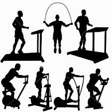

Cardio: Common Exercises & Weekly Recommendations
Common Cardio Exercises
- Walking
- Cycling
- Ellipticals
- Swimming
- Aerobic Dance
- Jogging
- Biking
- Rowing
Cardiovascular Exercise 30-60 minutes of moderate intensity 5 days a week or 20-60 minutes of vigorous-intensity 3 days a week. You can break up the recommendation into 10 minute segments throughout the day You want to gradually progress your exercise time, frequency and intensity